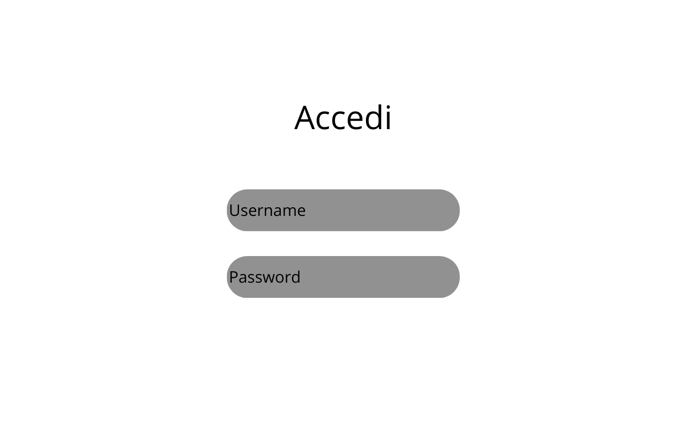
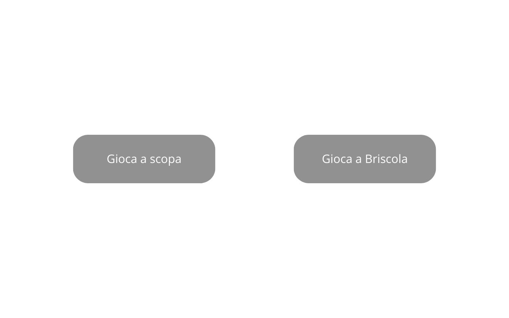
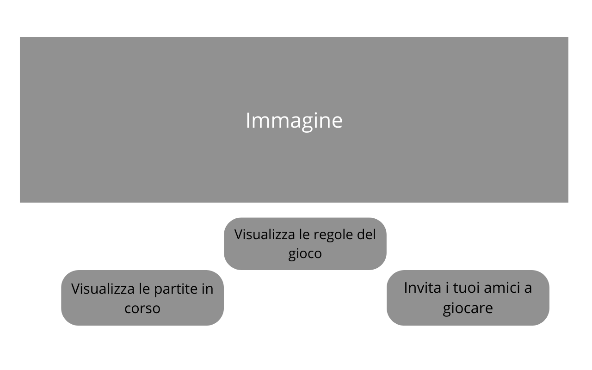
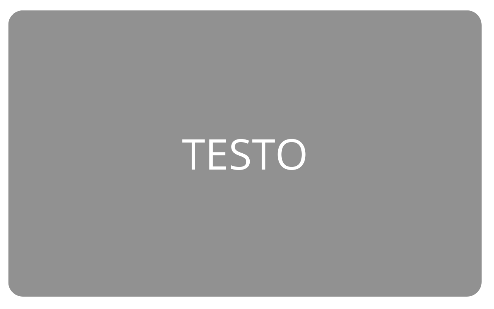
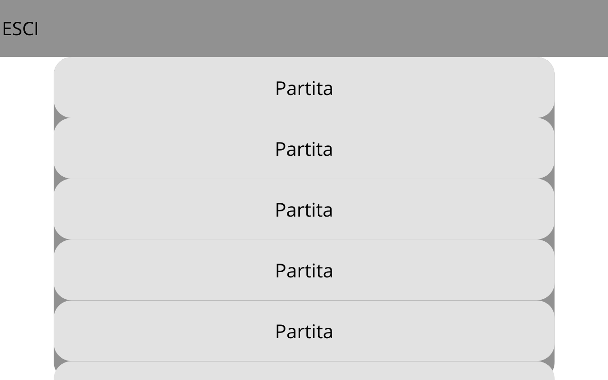
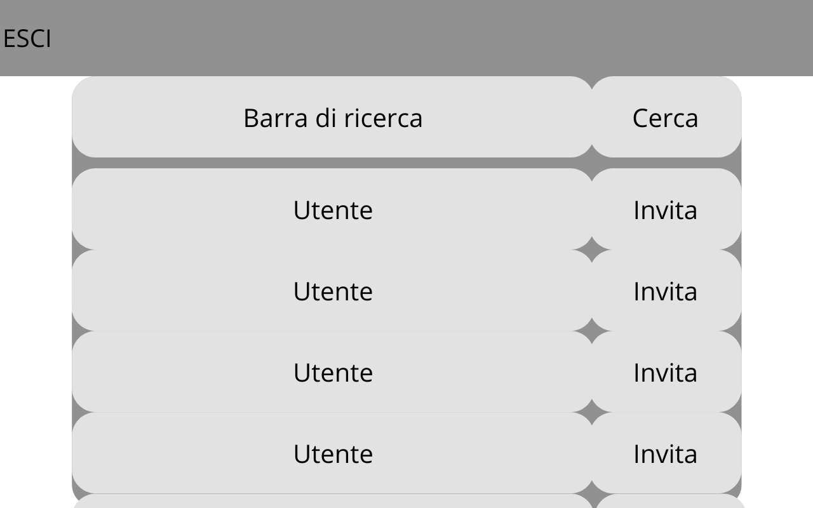
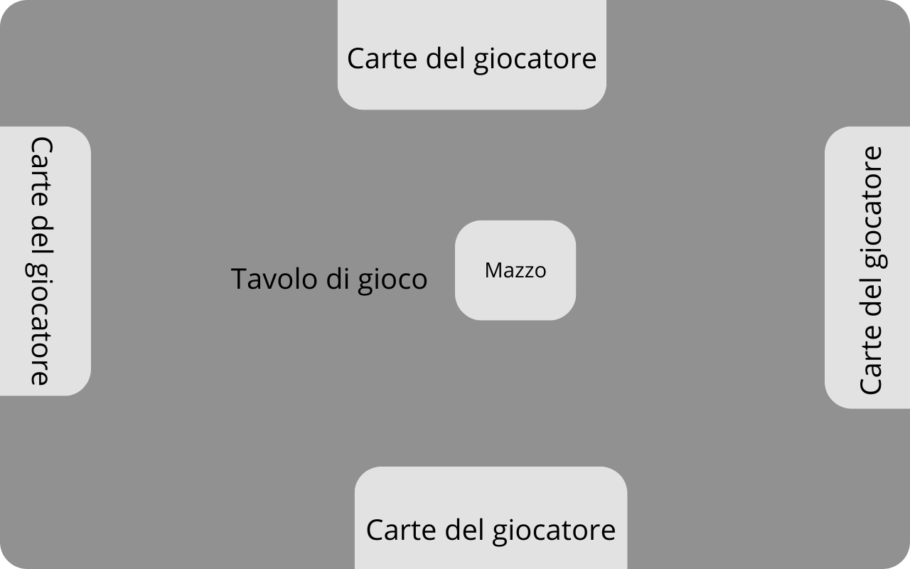

Documentazione
Scopa e Briscola
In questo progetto l'utente potrà accedere al sito e decidere a che gioco giocare, dopodichè potrà invitare i suoi amici o essere invitato, così inizierà a giocare, oppure potrà guardare una partita come spettatore.
- Classe/Anno: 5Binf - 23/24
- Author: Dalla Nave, Ciaramidaro
- Creato: 24 aprile 2024
- Ultima modifica:
Architettura informazione

UML
Diagramma di Casi d'uso

Diagramma di oggetti

Diagramma di Stato

Diagramma di Sequenza

Ipotesi infrastruttura
l'infrastruttura ipotizzata comprende un
- Frontend:Un'aplicazione web che gli utenti utilizzeranno per giocare e osservare altre partite
- Backend:Un server che gestisce la logica di gioco e la comunicazione tra i giocatori.
Responsabilità:- Gestione delle partite in corso
- Autenticazione degli utenti
- Comunicazione in tempo reale tra i giocatori ,utilizzando Web Socket
- Calcolo dei punteggi finali
- DB:Un DB, per memorizzare i dati degli utenti, le partite in corso e i punteggi
- Autenticazione: implementare un sistema di autenticazione sicuro per gestire l'accesso degli utenti
- Gestione delle partite: implementare un sistema per tenere traccia delle partite in corso e calcorare lato server i punteggi a fine partita
- Configurazione delle Regole di Gioco: Definire le regole specifiche per la briscola e la scopa, e gestire le diverse "mani" di gioco
Wireframes
Pagina di login:
Homepage:
Pagina principale per ogni gioco:
Pagina delle regole:
Pagina partite in corso:
Pagina utenti connessi:
Pagina di gioco:
Il progetto
Il sistema permetterà la registrazione degli utenti, richiedendo nome e password per creare un profilo personale. La pagina home del gioco presenterà un elenco delle partite in corso e degli utenti connessi. Sarà possibile visualizzare una partita in corso cliccandovi sopra. Per quanto riguarda l'interazione tra gli utenti, cliccando su un utente libero si invierà un invito a giocare; se l'invito viene accettato, i due (o più) utenti potranno iniziare una partita. La pagina della partita sarà progettata per essere intuitiva e rispondere alle esigenze del gioco: ogni partita sarà a tempo, con un limite predefinito per ogni mossa, e i giocatori potranno vedere solo le proprie carte e l'ultima carta giocata (o le carte in terra, nel caso della scopa). Infine, il sistema sarà in grado di gestire diverse "mani" di gioco, conformemente alle regole tradizionali di briscola e scopa, e calcolerà automaticamente il punteggio al termine di ogni partita.